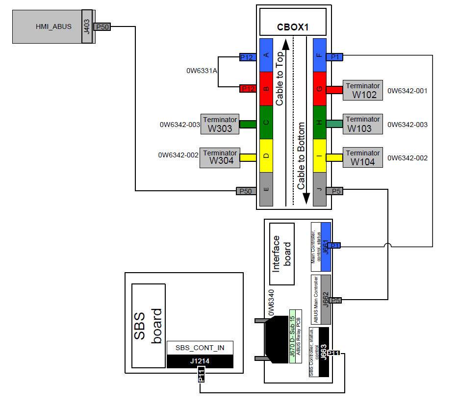
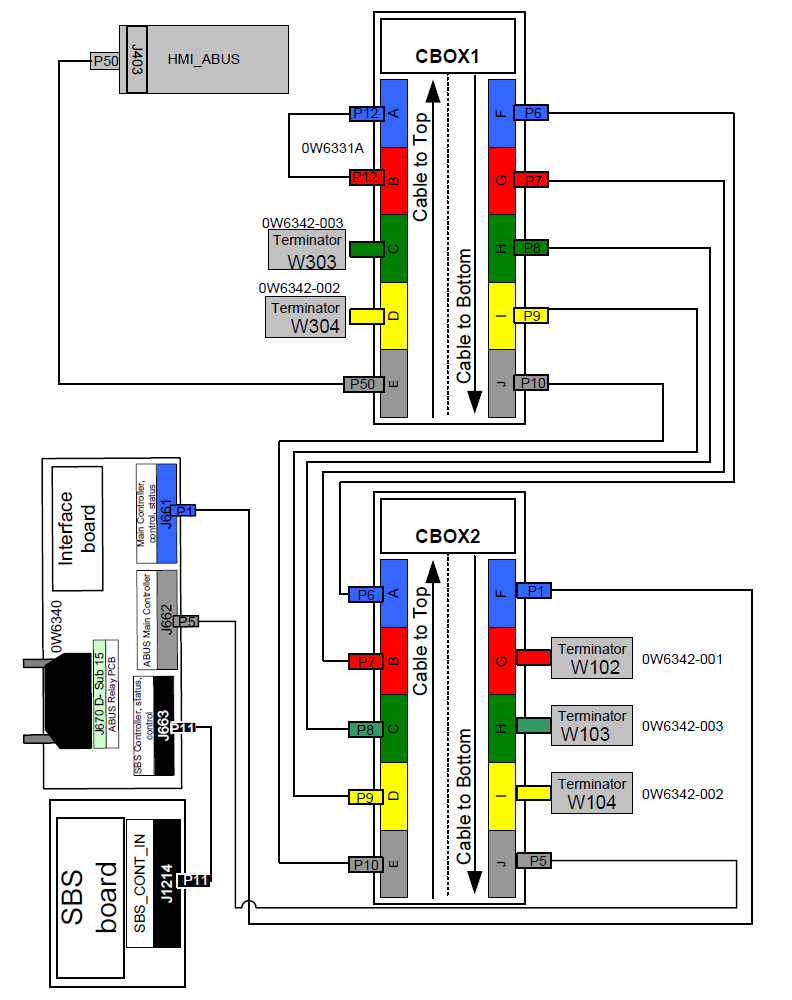
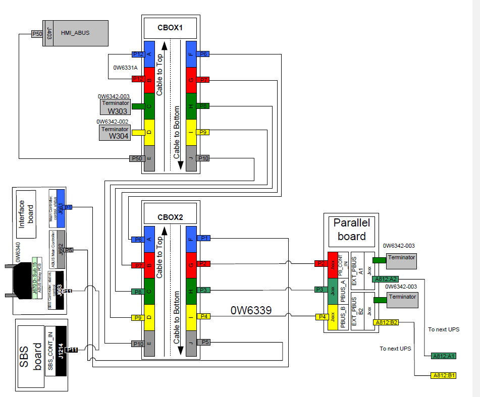

Internal Communication Wiring Reality EMEA Communication Wiring 10–40 kVA Single System  Communication Wiring 10–40 kVA Parallel System Communication Wiring 50–80 kVA Single System  Communication Wiring 50–80 kVA Parallel System 